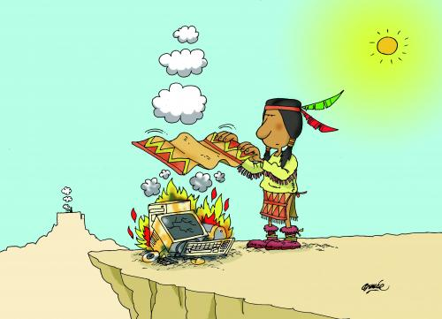

|
Comunicación verbal
|
Se refiere a la comunicación que se
vale de la palabra para dar el mensaje, es la principal
forma de comunicación que se utiliza. Puede ser oral o
escrita. Por ejemplo: Conversaciones, juntas,
entrevistas, memorándos, cartas, tablero de avisos, correo
electrónico, páginas de internet etc. |
|
Comunicación no verbal
|
Podemos comunicar sin pronunciar
palabras, sin escribir cosa alguna. Las acciones son
actividades de comunicación no verbal que tienen igual
importancia que la palabra y las ilustraciones. |
|
|
Comunicación Gráfica
|
La comunicación gráfica y las
ilustraciones son complemento para la comunicación de tipo
verbal, se refiere a los apoyos gráficos que se utilizan
tanto para apoyar un mensaje como para trasmitir una idea
completa. |
|
Características no verbal

|
La comunicacion no verbal incluye
expresiones faciales, tono de voz, patrones de contacto,
movimientos, diferencias culturales, etc. En
la comunicación no verbal se incluyen tanto las acciones
que se realizan como las que dejan de realizarse. Así, un
apretón de manos fuerte, o llegar tarde todos los días al
trabajo son también comunicación. |
|